Centres d’intérêt
Informatiques
Sécurité Réseau
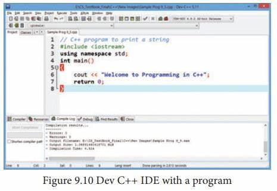
Programmation
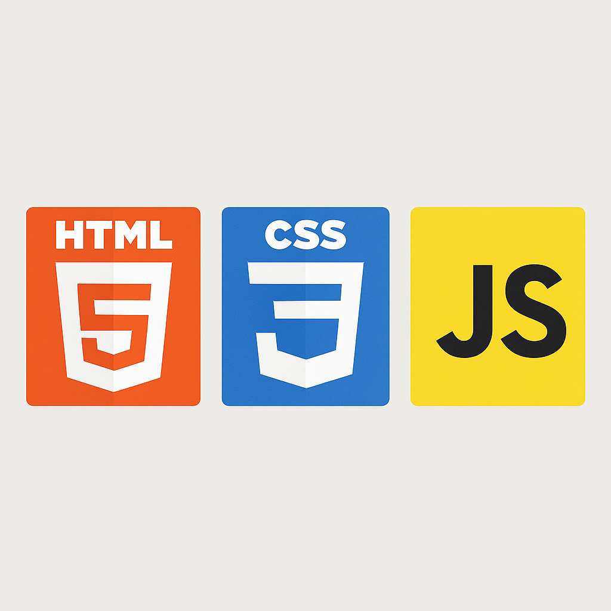
Développement Web
Intelligence Artificielle
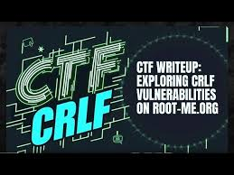
Root-Me & CTF
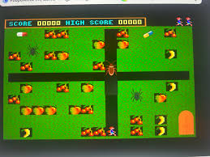
Jeux Vidéo
Sportifs
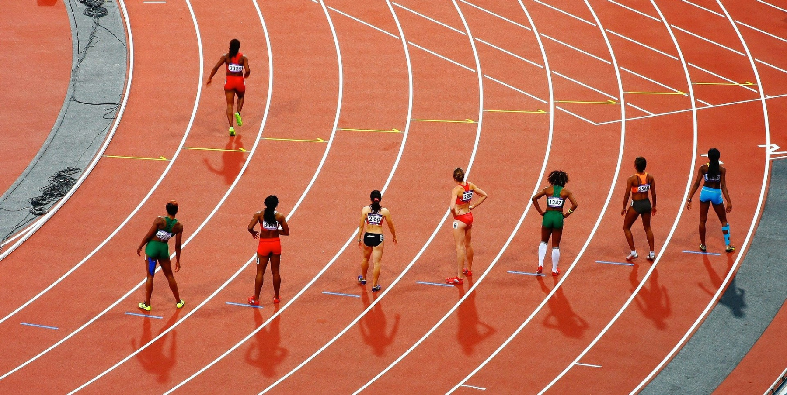
Athlétisme
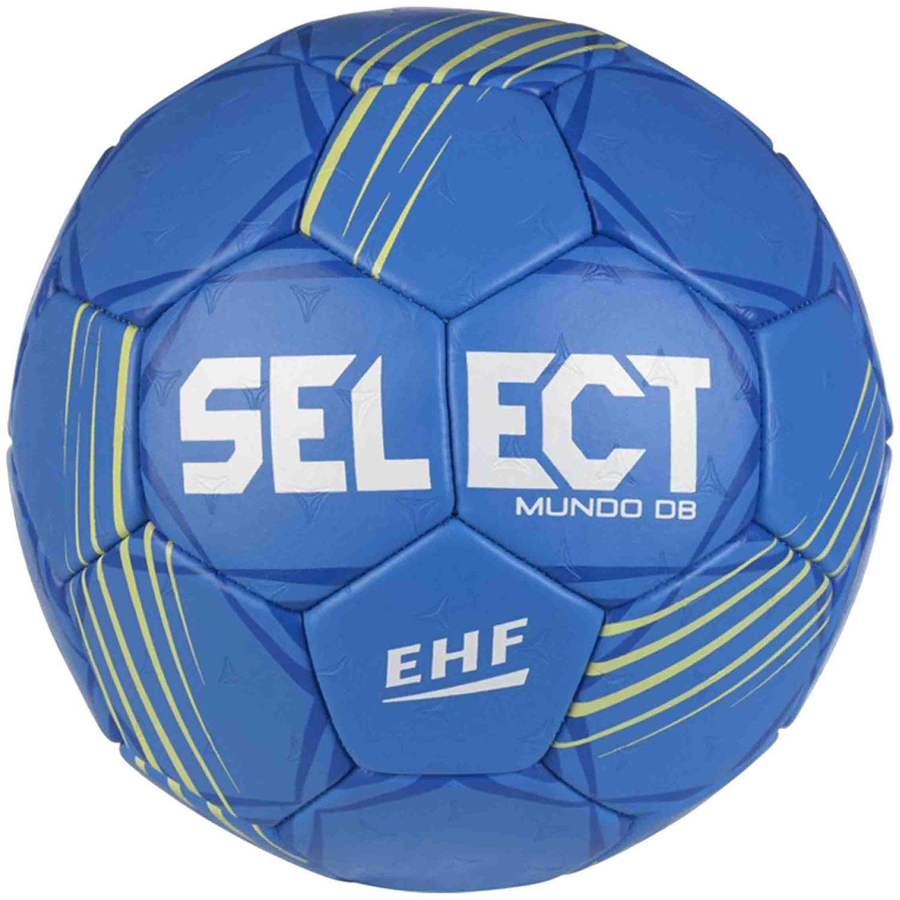
Handball
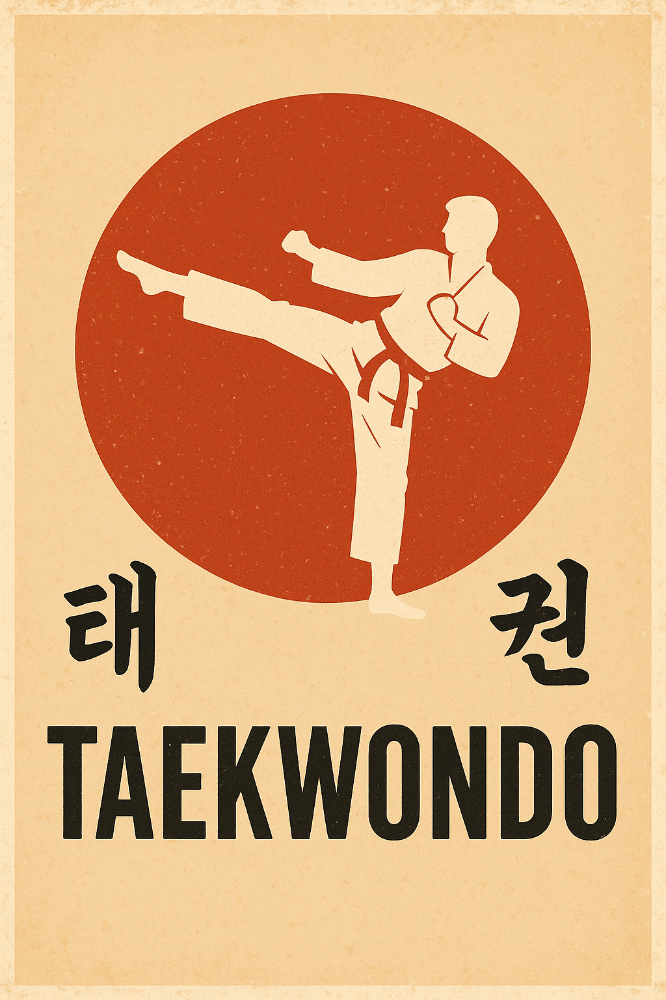
Taekwondo
Artistiques
Théâtre
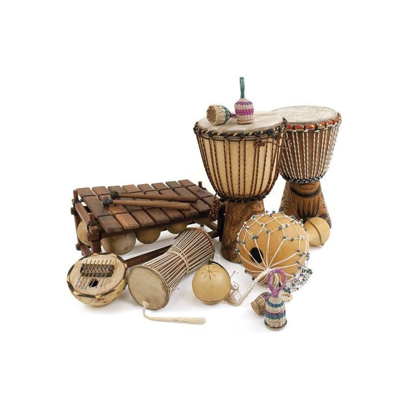
Musique
Art
Autres
Lecture
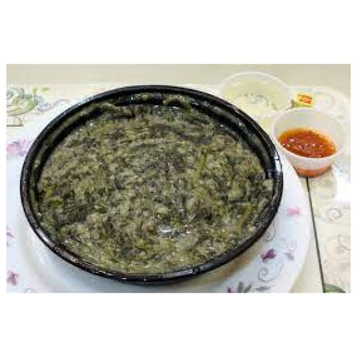
Cuisine
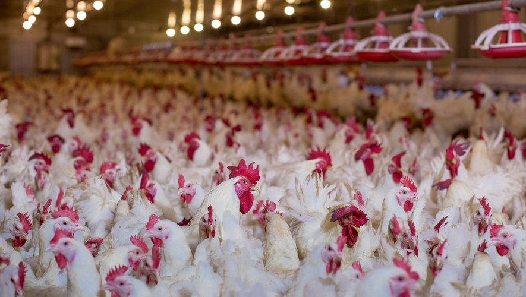
Élevage
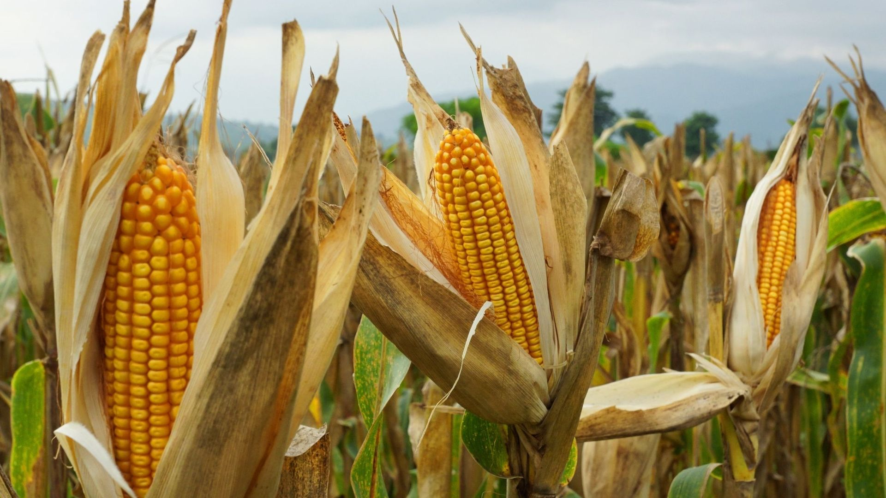
Agriculture
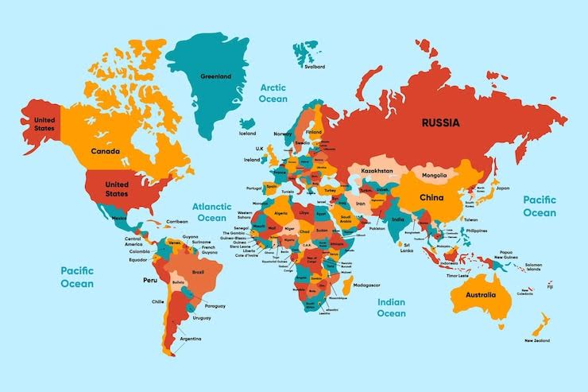
Voyages
Sécurité Réseau
La sécurité réseau est ma passion principale en informatique. Je m’intéresse à la protection des infrastructures, aux protocoles de sécurité et à la détection d’intrusion.
J’étudie activement les concepts théoriques (pare-feux, VPN, IDS/IPS) et aspire à approfondir mes compétences pratiques dans le cadre du parcours DACS.
Programmation
Je m’intéresse à plusieurs langages de programmation, notamment Java, Python et C++.
Résoudre des problèmes algorithmiques et développer des applications sont des activités que j’apprécie particulièrement dans mon parcours informatique.
Développement Web
Le développement web me fascine. J’aime créer des sites web interactifs et responsive avec HTML, CSS et JavaScript.
Ce portfolio est l’un de mes projets web, où j’ai mis en pratique la conception multilingue (FR/EN/DE) et le design responsive.
Intelligence Artificielle
Je m’intéresse activement aux Large Language Models (LLMs) comme GPT et Claude, à leur fonctionnement et à leurs applications pratiques.
J’expérimente avec les APIs d’IA pour automatiser des tâches et créer des outils intelligents. Le projet Vortex Echo Studios intègre déjà des technologies IA via Netlify.
Root-Me & CTF
Je participe régulièrement aux challenges de cybersécurité sur Root-Me : exploitation web, cryptographie, forensics et stéganographie.
Les compétitions CTF sont pour moi une façon ludique et efficace de progresser en sécurité offensive dans un cadre légal et pédagogique.
Jeux Vidéo
Passionnée par les jeux vidéo, notamment les RPG et les jeux d’aventure. Mon projet C++/SDL2 est directement inspiré de cet intérêt.
Les jeux vidéo m’ont initie à la programmation événementielle, la physique et la logique algorithmique. Vortex Echo Studios est aussi né de cette passion.
Athlétisme
J’ai pratiqué l’athlétisme pendant mon cursus scolaire, en me spécialisant dans le sprint, le saut en longueur et le triple saut.
Cette discipline m’a permis de développer mon endurance, ma concentration et mon esprit de compétition.
Handball
J’ai appris le handball dans mon école pendant 4 ans.
Ce sport collectif m’a appris l’importance du travail d’équipe, de la communication et de la stratégie collective.
Taekwondo

J’ai pratiqué le Taekwondo pendant 3 ans et j’ai obtenu ma ceinture rouge.
Cet art martial m’a aidé à maintenir ma discipline personnelle, améliorer ma confiance en moi et développer ma concentration.
Théâtre
J’ai participé à plusieurs pièces de théâtre scolaires. Je suis actuellement un atelier théâtre organisé par mon établissement.
Le théâtre a amélioré mon expression orale, ma capacité à parler en public et ma gestion du stress lors des présentations.
Musique
J’aime écouter différents genres musicaux et j’ai appris un peu le piano. Je joue aussi des instruments africains : djembé, calebasse et shékéré.
La musique me permet de me détendre, m’exprimer différemment et maintenir un lien avec ma culture d’origine.
Lecture
Je suis une lectrice passionnée, particulièrement intéressée par les romans de science-fiction, les livres poétiques et les essais scientifiques.
La lecture enrichit mon vocabulaire et ouvre mon esprit à de nouvelles idées.
Cuisine
J’aime expérimenter avec différentes recettes, en particulier les plats traditionnels africains et la cuisine française.
La cuisine me permet de partager ma culture d’origine et de découvrir celle des autres.
Élevage
J’ai participé à l’élevage de volailles et de petits animaux dans ma famille et dans mon école.
Cette activité m’a enseigné la responsabilité et le respect des êtres vivants.
Agriculture
J’ai participé aux travaux agricoles familiaux, cultivant principalement des légumes et du maïs.
L’agriculture m’a appris la patience et l’importance du travail régulier.
Voyages
Je suis passionnée par les voyages et la découverte de nouvelles cultures.
Les voyages m’aident à élargir ma vision du monde et à pratiquer des langues étrangères.
Art
Je pratique diverses formes d’art, notamment la création d’objets décoratifs. Je suis aussi passionnée par le dessin et la peinture.
Cette passion me permet d’exprimer ma créativité et d’explorer différentes techniques artistiques.
Interests
Computing
Network Security
Programming
Web Development
Artificial Intelligence
Root-Me & CTF
Video Games
Sports
Athletics
Handball
Taekwondo
Artistic
Theatre
Music
Art
Others
Reading
Cooking
Animal Breeding
Agriculture
Traveling
Network Security
Network security is my main passion in computer science. I am particularly interested in network infrastructure protection, security protocols and intrusion detection.
I actively study theoretical concepts (firewalls, VPN, IDS/IPS) and aspire to deepen my practical cybersecurity skills within the DACS track.
Programming
I am interested in several programming languages, notably Java, Python and C++.
Solving algorithmic problems and developing applications are activities I particularly enjoy in my computer science journey.
Web Development
Web development is a field that fascinates me. I enjoy creating interactive and responsive websites using HTML, CSS and JavaScript.
This portfolio is one of my web projects, where I implemented multilingual design (FR/EN/DE) and responsive layout.
Artificial Intelligence
I am actively interested in Large Language Models (LLMs) like GPT and Claude, their inner workings and practical applications in software development.
I experiment with AI APIs to automate tasks and build intelligent tools. The Vortex Echo Studios project already integrates AI technologies via Netlify.
Root-Me & CTF
I regularly take part in cybersecurity challenges on Root-Me: web exploitation, cryptography, forensics and steganography.
CTF competitions are a fun and effective way to improve my offensive security skills in a legal and educational context.
Video Games
Passionate about video games, especially RPGs and adventure games. My C++/SDL2 project was directly inspired by this interest in creating interactive worlds.
Video games introduced me to event-driven programming, physics management and algorithmic logic. Vortex Echo Studios also grew from this passion.
Athletics
I practiced athletics during my school years, specialising in sprinting, long jump and triple jump.
This discipline helped me develop endurance, concentration and a competitive spirit.
Handball
I learned handball at school for 4 years.
This team sport taught me the importance of teamwork, communication and collective strategy.
Taekwondo
I practiced Taekwondo for 3 years and earned my red belt.
This martial art helped me maintain personal discipline, improve self-confidence and develop focus.
Theatre
I have participated in several school plays, playing different roles. I currently attend a theatre workshop organised by my institution.
Theatre has significantly improved my oral expression, public speaking ability and stress management.
Music
I enjoy listening to different music genres and have learned some piano, as well as African instruments: djembé, calabash and shekere.
Music allows me to relax, express myself differently and maintain a connection with my cultural heritage.
Reading
I am a passionate reader, particularly interested in science fiction novels, poetic books and scientific essays.
Reading enriches my vocabulary and opens my mind to new ideas.
Cooking
I enjoy experimenting with different recipes, especially traditional African dishes and French cuisine.
Cooking allows me to share my heritage and discover other cultures.
Animal Breeding
I have participated in raising poultry and small animals in my family and at school.
This activity taught me responsibility and respect for living beings.
Agriculture
I have participated in family agricultural work, mainly growing vegetables and corn.
Agriculture taught me patience and the importance of regular work.
Traveling
I am passionate about traveling and discovering new cultures.
Traveling allows me to broaden my worldview and practice foreign languages.
Art
I practice various art forms, notably creating decorative objects. I am also passionate about drawing and painting.
This passion allows me to express my creativity and explore different artistic techniques.
Interessen
Informatik
Netzwerksicherheit
Programmierung
Webentwicklung
Künstliche Intelligenz
Root-Me & CTF
Videospiele
Sport
Leichtathletik
Handball
Taekwondo
Künstlerisch
Theater
Musik
Kunst
Andere
Lesen
Kochen
Tierzucht
Landwirtschaft
Reisen
Netzwerksicherheit
Netzwerksicherheit ist meine Hauptleidenschaft in der Informatik. Ich interessiere mich für den Schutz von Netzwerkinfrastrukturen, Sicherheitsprotokolle und Einbruchserkennung.
Ich studiere aktiv die theoretischen Konzepte (Firewalls, VPN, IDS/IPS) und strebe an, meine Cybersicherheitsfähigkeiten im DACS-Studiengang zu vertiefen.
Programmierung
Ich interessiere mich für mehrere Programmiersprachen, insbesondere Java, Python und C++.
Algorithmische Probleme zu lösen und Anwendungen zu entwickeln sind Aktivitäten, die ich in meinem Informatikstudium besonders schätze.
Webentwicklung
Webentwicklung fasziniert mich. Ich erstelle gerne interaktive und responsive Websites mit HTML, CSS und JavaScript.
Dieses Portfolio ist eines meiner Webprojekte, bei dem ich mehrsprachiges Design (FR/EN/DE) und responsives Layout umgesetzt habe.
Künstliche Intelligenz
Ich interessiere mich aktiv für Large Language Models (LLMs) wie GPT und Claude, ihre Funktionsweise und praktische Anwendungen.
Ich experimentiere mit KI-APIs, um Aufgaben zu automatisieren und intelligente Tools zu entwickeln. Das Projekt Vortex Echo Studios integriert bereits KI-Technologien über Netlify.
Root-Me & CTF
Ich nehme regelmäßig an Cybersicherheits-Challenges auf Root-Me teil: Web-Exploitation, Kryptographie, Forensics und Steganographie.
CTF-Wettbewerbe sind für mich eine spielerische und effektive Möglichkeit, meine offensiven Sicherheitsfähigkeiten zu verbessern.
Videospiele
Ich bin leidenschaftlich an Videospielen interessiert, besonders an RPGs und Abenteuerspielen. Mein C++/SDL2-Projekt wurde direkt von diesem Interesse inspiriert.
Videospiele haben mich in ereignisgesteuerte Programmierung, Physikverwaltung und algorithmische Logik eingeführt. Vortex Echo Studios entstand ebenfalls aus dieser Leidenschaft.
Leichtathletik
Ich habe während meiner Schulzeit Leichtathletik praktiziert und mich auf Sprint, Weitsprung und Dreisprung spezialisiert.
Diese Disziplin hat mir geholfen, meine Ausdauer, Konzentration und meinen Wettbewerbsgeist zu entwickeln.
Handball
Ich habe 4 Jahre lang in meiner Schule Handball gelernt.
Dieser Mannschaftssport hat mir die Bedeutung von Teamarbeit, Kommunikation und kollektiver Strategie beigebracht.
Taekwondo
Ich habe 3 Jahre lang Taekwondo praktiziert und meinen roten Gürtel erhalten.
Diese Kampfkunst hat mir geholfen, meine persönliche Disziplin zu erhalten und mein Selbstvertrauen zu verbessern.
Theater
Ich habe an mehreren Schultheaterstücken teilgenommen. Derzeit besuche ich einen Theaterworkshop meiner Institution.
Das Theater hat meine mündliche Ausdrucksfähigkeit und meine Fähigkeit, öffentlich zu sprechen, erheblich verbessert.
Musik
Ich höre gerne verschiedene Musikgenres und habe etwas Klavier gelernt. Ich spiele auch afrikanische Instrumente: Djembé, Kalebasse und Shékéré.
Musik ermöglicht es mir, mich zu entspannen, anders auszudrücken und eine Verbindung zu meiner Herkunftskultur zu pflegen.
Lesen
Ich bin eine leidenschaftliche Leserin und interessiere mich besonders für Science-Fiction-Romane, poetische Bücher und wissenschaftliche Essays.
Das Lesen bereichert meinen Wortschatz und öffnet meinen Geist für neue Ideen.
Kochen
Ich experimentiere gerne mit verschiedenen Rezepten, insbesondere traditionellen afrikanischen Gerichten und französischer Küche.
Das Kochen ermöglicht es mir, meine Kultur zu teilen und die anderer zu entdecken.
Tierzucht
Ich habe an der Zucht von Gefügel und Kleintieren in meiner Familie und in meiner Schule teilgenommen.
Diese Aktivität hat mir Verantwortung und Respekt vor Lebewesen beigebracht.
Landwirtschaft
Ich habe an landwirtschaftlichen Familienarbeiten teilgenommen, hauptsächlich im Anbau von Gemüse und Mais.
Die Landwirtschaft hat mir Geduld und die Wichtigkeit regelmäßiger Arbeit beigebracht.
Reisen
Ich bin leidenschaftlich am Reisen und der Entdeckung neuer Kulturen interessiert.
Das Reisen ermöglicht es mir, meine Weltsicht zu erweitern und Fremdsprachen zu üben.
Kunst
Ich praktiziere verschiedene Kunstformen, insbesondere die Herstellung von dekorativen Objekten. Ich bin auch leidenschaftlich am Zeichnen und Malen interessiert.
Diese Leidenschaft ermöglicht es mir, meine Kreativität auszudrücken und verschiedene künstlerische Techniken zu erkunden.